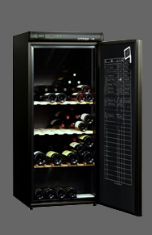
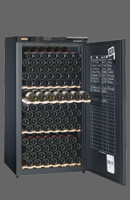
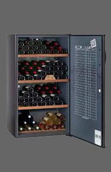

| AV 175 | |||||
|---|---|---|---|---|---|
|
 |
Pratique, le thermomètre en façade et le nouveau registre de cave innovant pour tenir la cave à la gestion de vos bouteilles préférées. Confortable, les clayettes collecteurs réversibles à empreinte en bois massif. | ||||
| Contenance | Système froid | Dimensions (hxlxp) | Porte | Coloris | |
| 178 (en 75cl) | Compresseur | 144 x 62 x 67 | Pleine | Noir | |
| Accessoires : 2 clayettes réversibles et 1 modulable (en option payante), régulation électromécanique, afficheur digital de température | |||||
| AV 205 | |||||
|---|---|---|---|---|---|
|
 |
Astucieux, sa lampe de lecture pour lire les étiquettes dans un environnement obscur. | ||||
| Contenance | Système froid | Dimensions (hxlxp) | Porte | Coloris | |
| 196 (en 75cl) | Compresseur | 139 x 70 x 68 | Pleine | Noir | |
| Accessoires : serrure à clé, 1 clayette coulissante (possibilité de supplémentaires en option payante), régulation électronique, Dynamique DataDisplay | |||||
| CV 183 | |||||
|---|---|---|---|---|---|
|
 |
Elégante, la poignée de porte en bois profilé. | ||||
| Contenance | Système froid | Dimensions (hxlxp) | Porte | Coloris | |
| 170 (en 75cl) | Compresseur | 125 x 70 x 67 | Pleine | Brun foncé | |
| Accessoires : serrure à clé, clayettes bois | |||||
© SFCV - Mentions légales